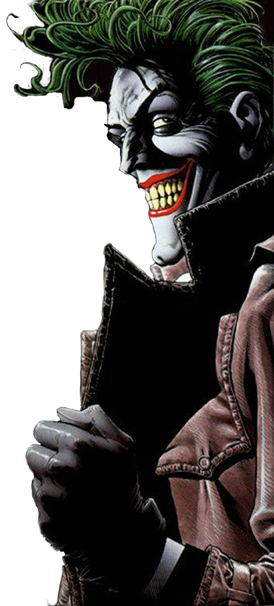
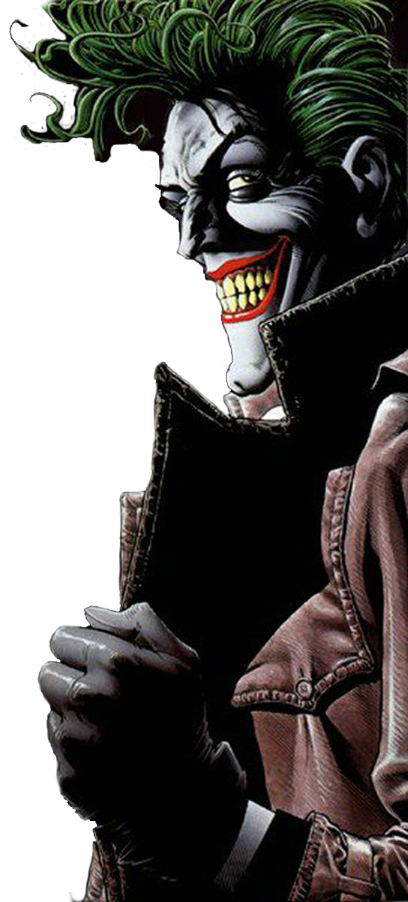

Avec deux compères de l'époque, nous nous sommes introduis dans une usine de produits chimiques. Je portais un masque de Red Hood ! Nous sommes rapidement repéré par la sécurité de l'usine, le premier est mort et le second qui s'était cassé la jambe dans sa fuite à fini prisonnier à la prison de Gotham. Cet imbécile, a jugé bon de me désigner comme chef de la bande alors que J'ETAIS LE CHEF DE LA BANDE !!! Ahhahah ! Qui d'autre ?Mais ce n'était pas le plan... Alors la chauve souris m'a pris en chasse et poussé dans cette FOUTTUE CUVE D'ACIDE ! Ce petit bain, m'a été bénéfique,... Puisque j'ai depuis développer des tendances psychopatiques et sociopathes ! Ahahaahahhah ! Ce n'est pas pour rien que je suis devenu le criminel le plus crains de Gotham !